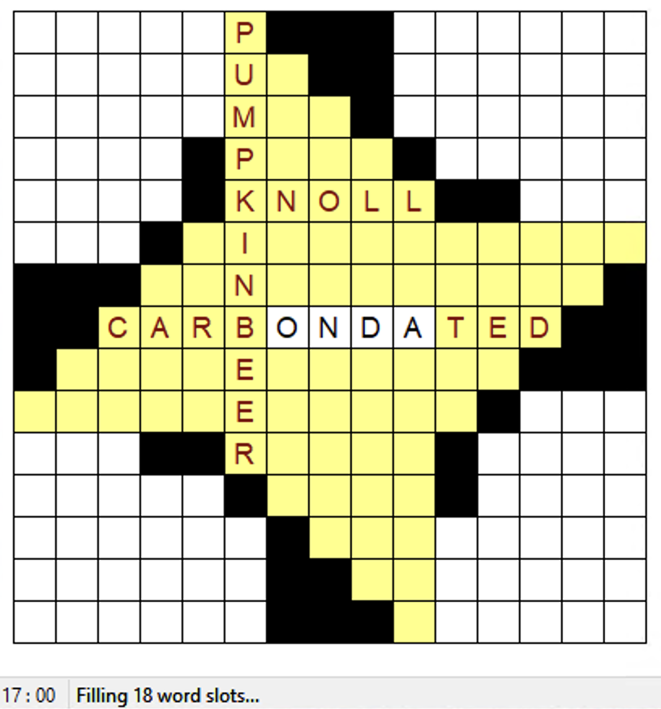
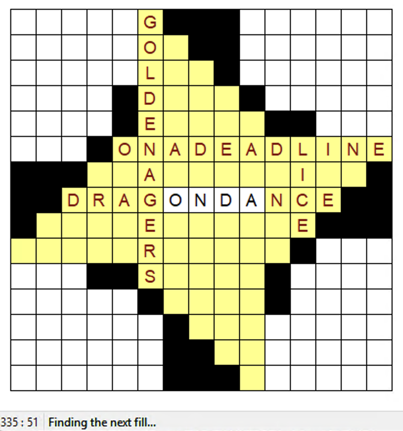

How Orca Works
Inside a high-performance crossword grid filler.
Orca is a high-performance crossword grid filler, specializing in exhaustive search over wide-open grids with large unconstrained regions.
1. Introduction
Crossword constructors typically use software to fill their puzzle with words, curating a grid with their favorite fun entries and minimal junk:
Random fill
Curated fill
However, boundary-pushing grids – like the highly interlocking one below – are a major computational challenge for existing software. As the puzzle author, it took me six months of computer time (using Crossword Compiler for exhaustive search) to find this set of ten 11-letter entries for the cavernous center region:
| * | * | * | * | * | H | * | * | * | * | * | * | |||
| * | * | * | * | * | A | T | * | * | * | * | * | * | ||
| * | * | * | * | * | L | E | S | * | * | * | * | * | * | |
| * | * | * | * | O | L | E | S | * | * | * | * | * | ||
| * | * | * | * | G | E | T | T | O | * | * | * | |||
| * | * | * | H | E | S | T | A | R | T | E | D | I | T | |
| C | I | N | C | I | N | N | A | T | U | S | ||||
| C | A | R | B | O | N | D | A | T | E | S | ||||
| M | A | K | E | U | P | G | A | M | E | S | ||||
| P | O | W | E | R | L | I | F | T | E | R | * | * | * | |
| * | * | * | B | U | R | E | N | * | * | * | * | |||
| * | * | * | * | * | M | E | A | T | * | * | * | * | ||
| * | * | * | * | * | * | E | S | I | * | * | * | * | * | |
| * | * | * | * | * | * | E | N | * | * | * | * | * | ||
| * | * | * | * | * | * | G | * | * | * | * | * |
New York Times Crossword, Saturday, June 10, 2023
Author: John Hawksley
Exhaustive search is necessary to find the best quality fill – the above grid only has a small number of possible options, feasible to review by hand. Even thornier grids might have no options at all.
Orca is built for exactly this kind of problem. With Orca distributed across 500 spot instances on Google Cloud, I completed an exhaustive search in one hour for about $10 in compute costs. On a typical computer with eight threads (like the one Crossword Compiler ran on for six months), the search would still only take a few days.
Two innovations make this possible:
- A core solver written in Rust, with a novel search strategy and many optimizations – 5 to 100x faster (depending on the grid) than the fastest alternative I tested.
- A distributed search framework that can efficiently utilize hundreds of CPUs, turning jobs that would take months into ones that finish in under an hour.
2. Benchmarks
On two benchmark grids, Orca finishes an exhaustive search quickly while other software struggles.
Single thread exhaustive search, same hardwareWindows 11 Pro · AMD Ryzen AI Max 390 · 64 GB RAM 8000 MT/s and dictionary33,000 7-letter words · 35,000 11-letter words · 411,000 total 3-15 letter words.
Crossfire, Crosserville, and Ingrid were also tested but were much slower.
The 15×15 benchmark has a wider gap than the 7×7 – since its grid is larger and less uniform, it's more sensitive to search strategy, e.g. the order in which slots are filled.
Multithreaded scaling
Orca parallelizes with low overhead, and scales well across cores:
Thread count vs. solve time
Multithreaded exhaustive search – same hardwareWindows 11 Pro · AMD Ryzen AI Max 390 · 64 GB RAM 8000 MT/s and dictionary33,000 7-letter words · 35,000 11-letter words · 411,000 total 3-15 letter words as above.
The following three sections on Propagation, Branching, and Optimizations explain how Orca is so fast.
3. Solver – Propagation
Crossword puzzle filling is a constraint satisfaction problem:
- Variables — across and down slots.
- Domains — dictionary words (or phrases) of the right length.
- Constraints — crossing letters must agree.
Constructors spend a lot of time improving their dictionaries of words suitable for crosswords. My personal dictionary has 411,000 words of 3 to 15 letters:
The slots and crossings in a grid can be modeled as variables and constraints, and organized into a constraint graph – this captures how each slot impacts its neighbors.
Propagating constraint updates
If one slot's domain shrinks, we propagate the change to each of its graph neighbors (its crossing slots):
- Check what letters are still possible at the crossing square.
- Filter the neighbor's domain.
- If it shrank, add it to the queue to propagate further.
This is a typical AC-3 style propagation loop; essentially Orca is a fast implementation of AC-3 with new heuristics tailored to grid filling.
No matter what order is followed when propagating constraints, it always will reach the same stable point where either:
- A slot has no remaining options – contradiction, no solution.
- Every slot has one option – solution found.
- At least one slot still has multiple options.
However, propagation order does impact speed, because once a contradiction is found we can stop. Orca uses a priority queue to propagate slots with fewest remaining options first – spotting dead ends faster. In an ablation test, this was 2.5x faster than a standard FIFO queue:
| Queue strategy | Propagation steps | Time |
|---|---|---|
| FIFO queue | 271M | 12.5 min |
| Priority queue – least domain | 208M | 5.0 min |
15×15 on same hardwaremacOS 26.3 · M5 MacBook Air, 2026 · 16 GB RAM. Identical search trees – only propagation speed differed.
Notice that propagation steps only decreased by 23% – the speed-up isn't only from fewer propagations, but also from them being cheaper on average. Slots with fewer options are less work to propagate.
4. Solver – Branching
When propagation stalls – without reaching a contradiction or solution – the solver needs to branch: it picks a cell and tries each letter in turn, propagating after each. (On a contradiction or solution, it backtracks to try the next letter.)
Cell-level branching
Traditional solvers branch at the slot level – pick a slot and try each candidate word. For an 11-letter slot with 35,000 candidates, 4000 of them might have E in position 9 — yet each independently triggers the same propagation. If E leads to a dead end, the solver discovers this 4000 times.


Crossword Compiler after 17 min and after 5 hr 36 min. Full words are tried one at a time, resulting in many identical propagations. Example: PUMPKIN BEER and GOLDEN AGERS share an E in position 9, restricting the crossing slot in the same way.
Orca branches at the cell level instead. Rather than "which word goes in this slot?", it asks "which letter goes in this cell?" Trying a letter at a crossing covers all words with that letter there. If it's a dead end, a single backtrack eliminates the entire group. This produces dramatically smaller search trees.
What cell to branch on?
It's critical to have a strong heuristic for choosing the next cell. Otherwise, we can skip around the grid, placing letters without zeroing in on a set of cells that produce a contradiction.
In fact, with a naïve minimum remaining valuesMRV heuristic: Branch at the slot (or cell) with the fewest remaining options (MRV) heuristic for both slot- and cell- level, slot-level was actually faster:
| Branching strategy | Nodes# of times the solver branched (on either a slot or cell) | Backtracks# of times a contradiction was reached | Time |
|---|---|---|---|
| Slot-level (MRV) | 4.7M | 92.2M | 1h 16m |
| Cell-level (MRV) | 13.6MCell-level has more nodes – it branches more times, because each time only sets one letter. | 53.5MCell-level has fewer backtracks – each backtrack rules out more of the search tree. | 1h 43m |
15×15 on same hardwaremacOS 26.3 · M5 MacBook Air, 2026 · 16 GB RAM. Only the branching strategy differs.
Orca unlocks the structural advantage of cell-level branching with a new heuristic for cell selection, which has no natural slot-level analogue. This has two parts:
- Sum of crossing domain products – raw work estimate for a cell.
- Length sum – combined length of the two crossing slots.
Using these heuristics, the results are significantly better – 16x faster and 30x fewer backtracks compared to slot-level MRV.
| Branching strategy | Nodes# of times the solver branched (on either a slot or cell) | Backtracks# of times a contradiction was reached | Time |
|---|---|---|---|
| Cell-level (MRV) | 13.6M | 53.5M | 1h 43m |
| Sum of crossing domain products (SoCDP) | 3.2M | 14.4M | 26m 19s |
| SoCDP w/ length sum pre-sort | 528K | 3.1M | 4m 40s |
Same setup as above. All cell-level branching, with different heuristics.
Orca's heuristic part 1: SoCDP
The minimum remaining values heuristic is a very weak indicator of how constrained a given crossing is. A cell with only two possible letters could be very unconstrained, with hundreds of words – both across and down – that fit either letter:
Orca uses a new heuristic instead: sum of crossing domain products (SoCDP):
Where countA(l) and countD(l) are counts of the remaining Across and Down words with letter l at the crossing position. SoCDP estimates the total work across all branches – Orca branches on the cell with the lowest sum.
Orca's heuristic part 2: Static sort window
Using SoCDP alone has a tendency to favor short crossings, which locally have low work estimates. However, this can scatter constraints around the grid, leading to larger search trees in the long run.
For this reason, Orca pre-sorts grid cells in descending order by length sum – the total length of the two slots that cross at that cell. When selecting a branching cell, Orca only considers the first k (currently 15) unassigned cells in this order.
| * | * | * | * | * | 17 | * | * | * | * | * | * | |||
| * | * | * | * | * | 18 | 18 | * | * | * | * | * | * | ||
| * | * | * | * | * | 19 | 19 | 19 | * | * | * | * | * | * | |
| * | * | * | * | 15 | 15 | 15 | 15 | * | * | * | * | * | ||
| * | * | * | * | 16 | 16 | 16 | 16 | 16 | * | * | * | |||
| * | * | * | 16 | 22 | 22 | 22 | 22 | 22 | 16 | 15 | 19 | 18 | 17 | |
| 15 | 16 | 22 | 22 | 22 | 22 | 22 | 16 | 15 | 19 | 18 | ||||
| 19 | 15 | 16 | 22 | O | N | D | A | 16 | 15 | 19 | ||||
| 18 | 19 | 15 | 16 | 22 | 22 | 22 | 22 | 22 | 16 | 15 | ||||
| 17 | 18 | 19 | 15 | 16 | 22 | 22 | 22 | 22 | 22 | 16 | * | * | * | |
| * | * | * | 16 | 16 | 16 | 16 | 16 | * | * | * | * | |||
| * | * | * | * | * | 15 | 15 | 15 | 15 | * | * | * | * | ||
| * | * | * | * | * | * | 19 | 19 | 19 | * | * | * | * | * | |
| * | * | * | * | * | * | 18 | 18 | * | * | * | * | * | ||
| * | * | * | * | * | * | 17 | * | * | * | * | * |
Branching initially focuses on the central area, where 11-letter slots intersect.
As more letters are inserted, further away cells can enter the window.
This static sort window constrains the solver to focus on the longest slot crossings early in the search. The window size k controls how many cells (ordered by greatest length sum) are evaluated per branching decision.
Static sort windowIn descending order by combined length of crossing slots vs. search nodes# of times the solver branched (on either a slot or cell)
On the 7×7, all crossings have length sum = 14, so the "static sort" is just an arbitrary fixed order. On the 15×15 the effect is significant, with an ideal region between k=8 and k=16.
Solution path animation
How many explicit decisions does the solver make to fill a grid? Remarkably few. On the final successful path to one 15×15 solution, the solver makes just 12 branching decisions and propagation fills in the remaining cells. Click “Play” to watch this unfold — red cells are explicit branching decisions, green cells are constraint propagations.
The final branching choice – which places an S – is only to distinguish between CARBON DATES and CARBON DATED. Slot-level branching would have separately explored both of those as wholly independent subtrees.
5. Making It Fast
The algorithmic steps aren't complex, but Orca executes them millions of times, so the low-level details matter. This section explains how Orca is optimized to run fast.
Propagation
What needs to happen. After guessing a letter at a cell, Orca needs to remove every dictionary word that's ruled out from all affected slots — and keep going until stable. This accounts for over 90% of the solver’s runtime.
How we make it fast. It starts with the data representation. Each slot’s domain is a bitset – one bit per dictionary word of that length. In addition, a pre-indexed lookup table returns a bitset for “which words have this letter at this position.” Restricting a domain is a single bitwise AND of two ~4.2 KB blocks. In optimized builds, these compile to wide vector instructions (NEON on ARM, AVX on x86) that process hundreds of bits per instruction.
An example of using bitsets to filter a domain.
Several additional techniques further speed up the propagation loop:
- Small domain carve-out. For small domains (under 2,000 words), it scans words directly. The solver uses bitset intersections for large domains only.
- Skipping redundant work. If slots A and B cross, we have two arcs: A→B ("filter B based on A's letters") and B→A ("filter A based on B's letters"). A per-arc cache records what letters were possible last time; if nothing changed, skip.
- Subset before intersection. Even after building the filter, a read-only subset check determines whether the intersection would actually shrink the domain. If not, skip — avoiding the cost of writing back updated blocks and recounting the domain size.
Together, these avoid the vast majority of slow and unnecessary calculations during propagation.
Backtracking
What needs to happen. When the solver hits a dead end, it needs to undo all the changes from its last guess and try the next letter.
How we make it fast. Before propagation modifies any domain, the solver snapshots it. On backtrack, it restores every saved domain in one batch.
An additional optimization makes this even faster:
- Forced-move inlining. If a cell has only one possible letter, we insert it inline without pushing an additional stack frame – it's saved as part of the parent’s trail entry. This keeps the trail shallow rather than growing with every forced move.
Where time is spent
Where does the solver actually spend its time? The sample utility on macOS shows that almost all time is spent in propagation:
| Function | 15×15 | 7×7 |
|---|---|---|
propagate_from_slots — filter build, intersection |
83.5% | 82.0% |
_platform_memmove — filter copy, domain backup |
9.4% | 9.0% |
compute_letter_counts_at — crossing selection heuristic |
4.3% | 6.4% |
save_domain — trail bookkeeping |
1.2% | 1.1% |
| Search control, backtracking, malloc/free | 1.6% | 1.5% |
Over 92% of wall time is in the propagation loop and its memory copies. The inner loop is just bitwise AND, OR, popcount, and bulk copy — all of which compile to wide vector instructions.
6. Extra Constraints
Global constraints
Orca supports two types of global (grid-level) constraints:
- No duplicate words. Every answer in the grid must be a different word.
- Max shared substring. A configurable limit (default: 6) to avoid overly similar words, such as POLLINATION and IMAGINATION.
These are checked at the leaf, after a "solution" has been found. Since they are sparse global conditions, integrating them into propagation wouldn't be worth the cost.
Symmetry breaking
Grids with diagonal symmetry can be transposed to produce a duplicate solution on the same grid. Orca can enforce a letter ordering between two mirror cells during propagation, cutting the search space in half.
Check-only cells
Grids can use wild cells for areas that shouldn't be enumerated. Slots that span both wild and fill cells are marked "check-only": they participate in propagation but are never branched on. Slots spanning only wild cells are ignored.
Example: Orca only checks that any 7-letter word ends in AT.
Filling the corners during the primary search would waste CPU time, and also produce too many solutions. Crossword Compiler also has this feature, which was active when running benchmarks.
7. Parallel Processing
Orca works at three scales: sequential, multi-core, and distributed. All share the same cell-level branching strategy – it's also the basis for job partitioning.
Initial partition splitting
A priority queue ranks partitions – initially, the whole job is one partition – by a simple work estimate: sum of log2(remaining viable words) over all slots. The highest-cost partition is split one level at the best crossing cell, using the same heuristic as search. This continues until a target number of partitions is reached.
Mid-search splitting
Work estimates for partitions are very imprecise – some may turn out to be thousands of times larger than others. Orca handles this using automated mid-search splitting.
If a partition exceeds its timeout (local: 3 sec, distributed: 5 min), the worker walks its search stack and emits one sub-partition per untried letter at each frame. Sub-partitions are returned to the coordinator's pending queue.
No work is wasted. The split only emits sub-partitions for untried letters, then removes them so the original worker has no branching left — it finishes only its current leaf path (seconds of work) and returns.
Distributed architecture
For parallelizing beyond one local machine, a coordinator manages jobs and partitions via gRPC. Workers pull partitions, reconstruct solver state (deterministically) from the seeded letters, and execute the search.
Fault tolerance: heartbeats every 10s, 45s timeout reassigns stale partitions. Workers handle SIGTERM gracefully. Coordinator persists job progress to disk regularly for crash recovery.
8. Screenshots
Below are some screenshots of Orca's coordinator UI (not yet publicly released). Orca can also run locally from a command line interface.
9. Final Notes
Orca's solver code – other than the coordinator UI and distributed framework – is open source with an MIT license. Claude Code was used as an AI tool while building Orca.
Future work on the Orca solver could include:
- More analysis of branching heuristics on a larger range of grids.
- Learning a branching order dynamically, instead of relying fully on one heuristic.
- Features to support more use cases, such as support for other grid constraints.
Enjoy this mini crossword, which did not require a system as powerful as this to create!
| 1 | 2 | 3 | 4 |
| 5 | |||
| 6 | |||
| 7 |
Across
Down
Thanks for reading!